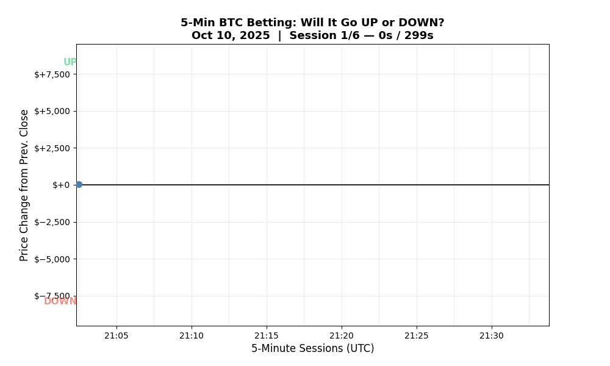
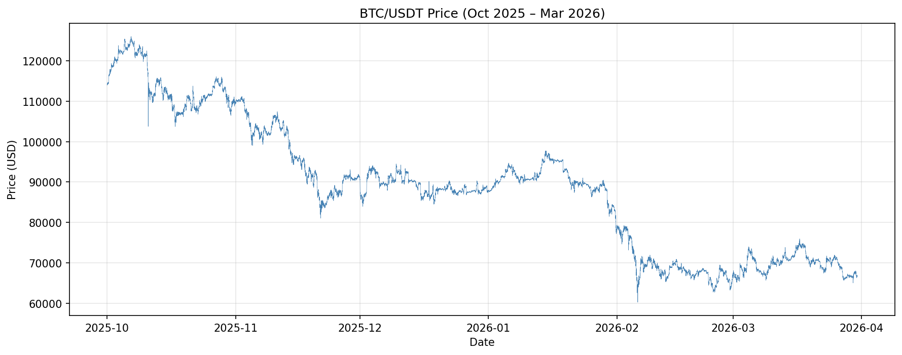
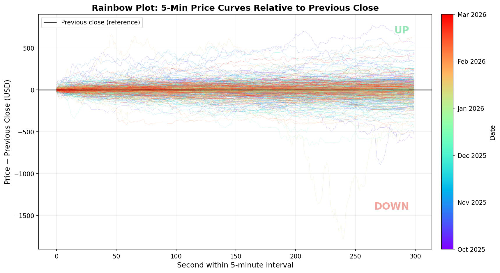
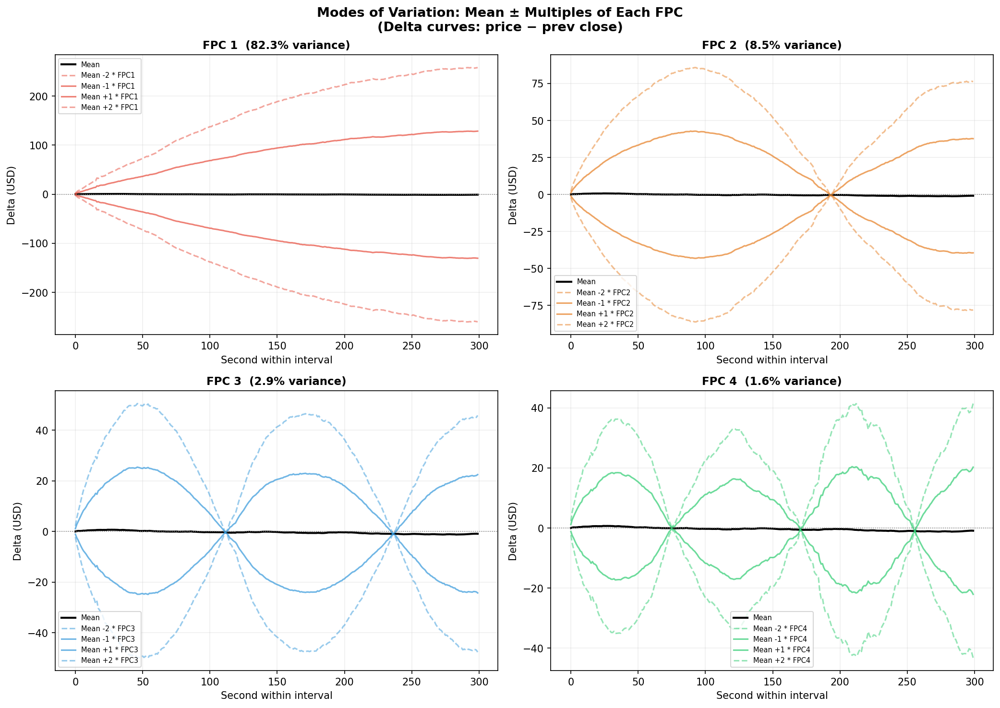
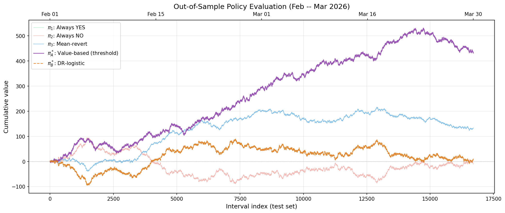
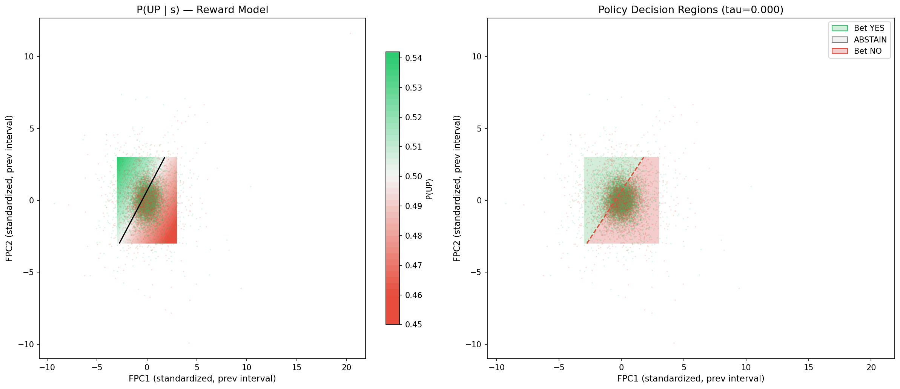
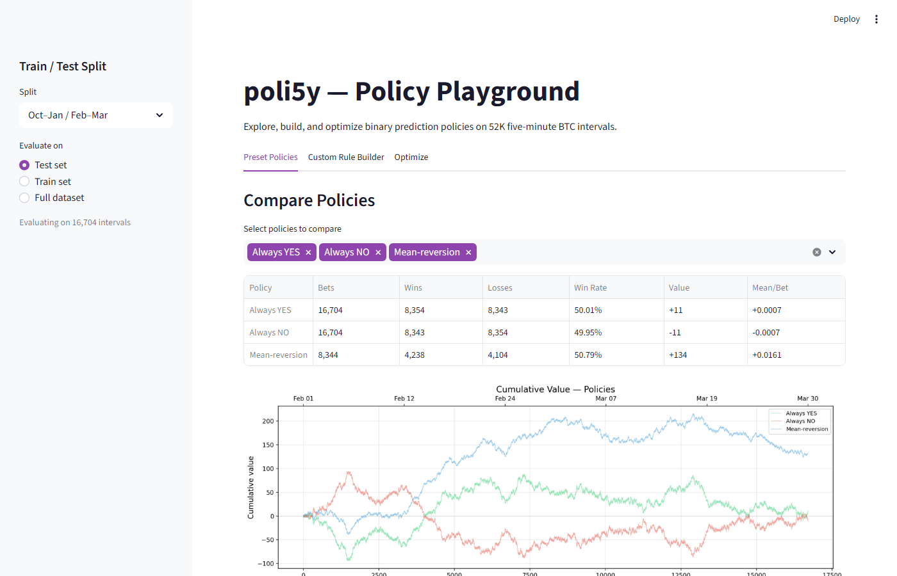

poli5y: Learning Betting Policies on BTC Prediction Markets

Every 5 minutes, the question is simple: will Bitcoin go up or down? That’s the bet. Above the line is UP, below is DOWN. The animation above shows what that looks like in real time during a particularly dramatic half hour — an $11K crash in 5 minutes, followed by a $4.5K bounce.
poli5y is a research project that frames this as a policy optimization problem rather than a price forecasting problem. We don’t try to predict where BTC is going. Instead, we learn a decision rule — a function that looks at the current state and outputs an action: bet YES, bet NO, or sit this one out. The language of reinforcement learning and causal inference, applied to prediction markets.
The Data: Six Months, Second by Second
We downloaded 6 months of BTCUSDT trades from Binance (~3.3 GB) and reshaped them into 52,128 five-minute intervals, each containing 300 price snapshots at 1-second resolution. Here’s the full trajectory, $60K to $126K:

BTC/USDT, October 2025 – March 2026. 52,128 five-minute intervals stitched together.Each interval isn’t just a return number — it’s a 300-point trajectory, a whole story arc squeezed into 5 minutes. Sometimes it drifts. Sometimes it panics. Sometimes it fakes you out at second 200 and reverses. The shape matters, not just the endpoint.
52,128 Curves, All at Once
Stack every interval’s price trajectory (minus the previous close) and color by date:

52K delta curves colored by date. Most hover near zero, but the tails are wild — and the spread changes with the market regime.Most curves hover near zero — the market is boring more often than not. But the tails are wild, and the spread changes color: some months are tighter, some are wider. Volatility clusters. This is why we need functional data analysis — each interval is a curve in 300-dimensional space, not a single number.
Functional PCA: What Shapes Does the Market Make?
Functional PCA decomposes the variation into orthogonal modes — the dominant shapes of price movement. Five components explain 96.5% of all variance:

Top 4 functional principal components. FPC1: level shift (did it go up or down?). FPC2: slope/tilt (early vs. late movers). FPC3–4: mid-interval reversals and wiggles.The first component is just “did the market move?” — boring but powerful. The second captures momentum vs. mean-reversion within the interval. The higher components catch V-shapes, fakeouts, and other dramatic plot twists. These FPCA scores, lagged by one interval, become the features our policy conditions on.
The Strategy: Stop Predicting, Start Deciding
We build a policy — a mapping from states to actions. The state is a 9-dimensional feature vector: 5 lagged FPCA scores, previous direction, rolling volatility, and cyclical time-of-day encoding. The action is {YES, NO, ABSTAIN}. The policy doesn’t model the market. It answers one question: given what I see right now, what should I do?
We tried two policy classes:
- Value-based with threshold: Fit a logistic reward model for P(UP | state), compute Q-values, and bet when confidence exceeds a threshold. The threshold controls selectivity — how sure the model must be before placing a bet.
- DR-logistic: Directly optimize a logistic policy using a doubly robust objective. Sounds fancier. Didn’t work.
Results
Trained on Oct 2025 – Jan 2026, tested strictly out of sample on Feb – Mar 2026:
| Policy | Test Bets | Win Rate | Value | Mean/Bet |
|---|---|---|---|---|
| Always YES (baseline) | 16,697 | 50.03% | +11 | +0.001 |
| Mean-reversion | 8,342 | 50.80% | +134 | +0.016 |
| Value-based (threshold) | 16,697 | 51.29% | +431 | +0.026 |
| DR-logistic | 16,697 | 50.03% | +11 | +0.001 |
The value-based policy accumulated +431 over two months — nearly 4x the best simple baseline. The edge is 51.29%, which sounds tiny until you remember it compounds over 16,697 bets.

Cumulative value on the Feb–Mar test set. The value-based policy (purple) dominates. The DR-logistic (orange, dashed) collapsed to “always YES.”The Interesting Failure
The DR-logistic policy collapsed — its intercept saturated at the upper bound and all feature weights went to zero. It learned “always bet YES,” identical to the baseline. Why? A logistic policy must bet on every interval (no abstention mechanism). In a near-50/50 market, the tiny edge from features is overwhelmed by the need to pick a global direction.
The value-based approach succeeded precisely because the Q-function + threshold framework naturally supports selective betting. Same signal, same model, wildly different results — because policy class design matters as much as optimization cleverness.

The learned decision surface. Left: P(UP | state) as a function of lagged FPC1 and FPC2. Right: the resulting action regions. The policy uses the shape of the previous trajectory, not just its direction.Try It Yourself
The project includes an interactive Streamlit dashboard where you can explore preset policies, build custom rules with if-then conditions, and optimize strategy templates with parameter sweeps. Policies are pluggable — drop a .py file in policies/ and it appears in the dashboard automatically.

The policy playground. Compare presets, build custom rules, or optimize strategies — click to try it live.The full analysis is documented in a 10-part writeup covering functional data analysis, policy evaluation, off-policy estimation, causal inference, and optimization — with all the math, figures, and self-deprecating humor you’d expect from a project that treats betting on Bitcoin as an applied statistics exercise.